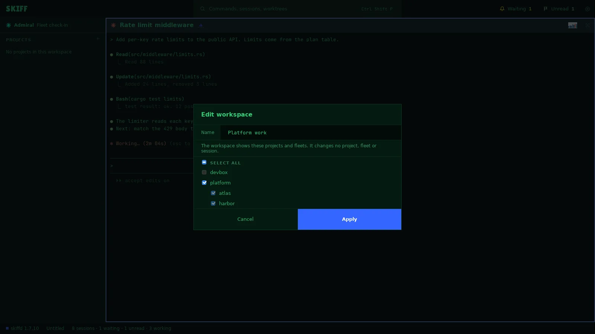

Skiff
SkiffWorkspaces
A workspace is a file that names some projects and fleets. While one is open, the side panel shows only those, and the Ledger shows only their work. A workspace changes what you see. It never changes a project, a fleet, a session or the ledger.
Chapter 8 of 9 · Skiff user guide
New workspace
- Click File › New workspace…. The status bar item at the bottom of the window opens the same menu.
- The Edit workspace dialog opens. Type a Name.
- Tick the fleets and projects to show. A ticked fleet brings every project in it, now and later. Tick single projects to show them alone. Select all ticks everything.
- Click Apply. The panel shows the picked projects. The status bar reads the workspace's name and Edited, because the file is not saved yet.

Edit a workspace
- Click File › Edit workspace…. Change the name or the ticks and click Apply.
- Or use the project menu. Remove from workspace takes a project out. While a workspace is open, the + on the PROJECTS head reads Add to workspace and lists the projects and fleets that are not in it.
- A project or fleet named in the file but not open in Skiff shows under Missing in the dialog. Pick Keep, unresolved, Remove from workspace, or another project to use in its place.
- The folds you make in the panel are part of the workspace too. They go to the file with the next save.
Save and save as
- Click File › Save workspace. The first save asks for a file. Skiff saves a .skiffw file, named after the workspace.
- Click File › Save workspace as… to save a copy under another name. The copy becomes the open workspace.
- The status bar item shows the state: Edited after a change, Saving… during a save, nothing when the file matches.
- If the file changed on disk, the item reads Changed on disk. Click it and pick Reload from disk or Keep current. Skiff never reloads by itself.
Open and close
- Click File › Open workspace… and pick a .skiffw file. File › Open recent workspace… lists the last ones.
- Click File › Close workspace to show all projects again. The status bar item calls it Close workspace: All projects.
- Every way out of an edited workspace asks first: Save, Don't Save or Cancel. Don't Save drops only the changes to the view.
- While a workspace is open, the Ledger shows its projects' work and work with no project. View › Ledger: show all work shows every row.